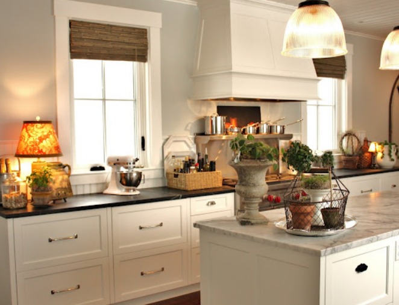

.png)
.PNG)
.PNG)
.PNG)
.PNG)
.PNG)
.JPG)
.JPG)
.PNG)
.PNG)


Since we looked at BIG houses and BIG rooms last week, I thought it might be good if we went in the other direction this week- not to little houses or little rooms, but to little spaces within a room. It is those small places that have been arranged with accessories that give a home its unique style.
fortheloveofahouse.blogspot.com
I love to decorate little spots in my home with accessories, but it doesn’t just “happen.” I am always – and I do mean always – looking for ideas. I open up a new magazine or catalog. I look at those details in the rooms, and think….hmmm…I could copy that. Or I go to a store and look at their displays, and think the same thing. It happens all the time… books… blogs… websites… shops… restaurants. I am like a sponge soaking up ideas to copy. You probably do the same thing too. That’s why Pinterest is so addictive! We are all looking for ideas to steal.
Today, I thought we would zoom in on some of these little vignettes and see what ideas we could …um…borrow from them. Since you know I love kitchens, we are just going to focus in on them. What ideas would you take from these?
Martha Stewart obviously has more sets of dishes than all of us combined together, so sometimes copying little ideas is not practical. I think there must be risers in the back of that cabinet to hold that second tier of cups. You could easily do that neat styling of the stacked plates and bowls. The way they did the rolling pins is what I adore here! Super easy and something unique that adds such a special touch to the kitchen.
Lots of great ideas to steal from Traci’s little vignette here:
1. the open shelves   2.  the accessories limited to greens and white with a floral napkin thrown in for an accent with a little blue. 3. a platter leaning up against the wall. 4. the jar with the label sitting on a cake stand. 5. fresh flowers  6. the pattern on each shelf of “tall in the middle -short on the sides.” Do you see what I am talking about there? On the top shelf, the platter is tall, and the 2 balancing pieces are shorter. On the middle shelf, the canister with the lemons is tall, and the balancing glasses are shorter. Even on the bottom area, the sign acts as the “tall” and is balanced by the shorter flowers and lemonade mix. I always love symmetry!

Next we have Heather Bullard – one of the “queens” of styling. Again we can steal those open shelves, a platter leaning up against the wall, and she has a ton of white here that could easily be mimicked. She has a large quantity of silver standing up in a canister, but if you just had stainless it would still look good. It’s the contrast of the metal against the wood and white that works here. Let’s zoom in more on that bottom part.

What can we copy from this? There’s a large basket for texture holding those beautiful wooden bread boards (more texture) and more white dishes with a bright punch of color in the fruit. And it’s not just one fruit – it’s a mix and they have leaves…more details to note. Am I picky? You bet I am! It’s the details that make such a difference in something looking good and something looking great.
These shelves by the stove above are filled with beautifully packaged foods. Now I doubt that most of us have 4 of every kind of condiment that we stock in our kitchens, but you can steal the idea of displaying foods – especially foods with pretty packaging. Notice the jars with the peas in them and the tall jars of oils, and of course the potted herbs. All of these little details could be easily copied. Oh, and don’t forget the linens hanging on a rod at the end of the island – handy AND beautiful.
fortheloveofahouse.blogspot.com
Now here is a kitchen that everyone has seen. Yes, it is lovely, but there are many little vignettes that could easily be copied from Joan. If you have cabinets with glass doors, you can display a variety of things like she has. I do think this cabinet is deeper than mine, because I don’t think I could fit that large silver bowl in my upper cabinets. But look specifically at what she is displaying: pitchers, platters, cake stands, glassware, and smaller pitchers holding rattan serving pieces. Even if you don’t have the glass doors, the idea for the jars on the counter with the scoops is a good and inexpensive one to copy. My jars came from Walmart and Target, and the scoops came from Sur La Table – easily affordable.

This is a cabinet by her kitchen fireplace. She has a platter hanging on the wall inside the cabinet. Steal that idea! The door stays open with a painting hung on it. There is a plant, cookbooks displayed, and more stacked serving pieces.
 fortheloveofahouse.blogspot.com
fortheloveofahouse.blogspot.com
Now don’t let her gorgeous humongo stove distract you. That is not what we are here for. 🙂 Look at the little vignettes on either side of it. There’s a basket full of oils, sauces, and vinegars with large platters standing up behind it. Easy-peasy to do. On the other side you see crocks full of cooking tools. I don’t have quite as many as she does there, but then again, I’ve got an itty bitty stove.
 foundbydomesticbliss.blogspot.com
foundbydomesticbliss.blogspot.com
Finally, let’s zoom in on the details of a kitchen in a house that surprised me by how much I like it. It is not traditional. It has a ton of industrial elements. I don’t have a lot of that here, and yet this house is one I would love to live in. The collage of details in the very top photo is from it. You could copy those chalkboards by the stove, and the scale with the onions, the cookbooks, and the crock with all the wooden cooking tools.
 foundbydomesticbliss.blogspot.com
foundbydomesticbliss.blogspot.com
Now look at their sink area. I don’t have any room behind my faucet to put things like they have, but the pretty decanter with the soap wouldn’t be difficult to do…and it would look much better than what most of us have there. A platter with fresh fruit AND flowers wouldn’t take long to pull together, and it would also look great.
That’s all the eye candy I have for you today.   Hope you found something you could copy or borrow from some of these! I want to find some more rolling pins and a place to display them like Martha has in her television kitchen set.
I’d love to hear from you in the comments if you can use any of these ideas. 🙂
Until next time…


.PNG)
Kelly, this is an incredible post!!! Do you know what I’ve been trying to do for the past week?! Make my kitchen more cozy and inviting….I’m horrible with creating vignettes. My kitchen is pretty bare b/c I have no idea on how to style it. I feel it always ends up looking cluttered. I’m totally going to steal some of these ideas. We have an area in our kitchen that is screaming for a vignette….I’m going to go through and make some notes and draw some things out. I sketch everything – invitation designs, dessert displays and now looks like I’m going ot have to sketch some kitchen ideas. I’m going out of town for work for a couple of days and now after reading this I just want to stay home and nest. Thanks so much!!
————————————————————————–
Elizabeth, sketching it out is such a great idea! I do that with a lot of things at work. I’m so happy you are able to use some of the ideas here, so you go right ahead and steal whatever you need. Thank you for your wonderful comments here!
Kelly
I love all these elements, and like you am constantly styling . But…. Where is the coffee pot and toaster? Those 2 appliances are daiy in my house!
———————————————————————
Wanda, that is a VERY good question. I don’t remember seeing a coffee pot in any of these..hmmm. We don’t have a toaster,but one entire counter in my kitchen is devoted to “the coffee bar.†I hope to do a run through of my kitchen vignettes tomorrow, and it WILL have a coffee pot (or two.) 🙂
Kelly
I love the way you broke down all of the details in the photos! You’ve got a great blog here! I found you through Traci’s facebook post. 🙂
———————————————————————–
Misti- Hooray for Traci sending you over! Thank you so much for your sweet comments. Please come visit again!
Kelly
Kelly,
I love accessories and like you, I always study vignettes that catch my eye for ideas to “borrow”. 🙂 This was an exceptional post chock full of ideas. I visit most of the sites you’ve introduced us to but found a couple of new ones, thanks for this.
Karen
—————————————————————————
Karen – Glad I could give you some eye candy AND some new reading material to enjoy! 🙂
Kelly
Hi Kelly,
I too love creating little vignettes in my kitchen (and the rest of the house). My husband always wants to put our ugly little white nylon cutting board-that I like to hide away- behind the kitchen faucets so maybe if I put our wonderful chestnut cutting board from Tuscany there it will stop that behaviour! 🙂 I also love the idea of having silverware in a nice pot- we have my mother-in-law’s old silver utensils for daily use (I always say that silver loves to be used!) and that would add a beautiful detail to our counter. I already have my cooking utensils in a couple of pitchers on the counter but I may cluster them with some other items and see how that looks.
Thanks again, Kelly, for all your great ideas and photos!
Cath
————————————————————————
Cath – Sounds like you have a lot of great things for styling your kitchen. I am jealous of you with that beautiful cutting board! Displaying it should make your husband stop putting the other one behind the faucets. Good luck with that!
Kelly
hi Kelly- Thank you so much for including my kitchen in this very fun and witty post! I am very honoroed to be in the company of these wonderful kitchens and vignettes! After you mentioned it I was curious myself and went to measure the depth of the cabinet shelves- they are 12-3/8″ ,and my jars came from Walmart too!
joan
———————————————————————–
Joan- We all love your kitchen! Your cabinets are deeper – my upper ones are only 10 3/4 in. deep so your beautiful bowl wouldn’t fit in mine. Nice to know I’m not the only one shopping at Walmart for jars. 🙂
Kelly
Oh rapturous joy! kitchens! My breathing became shallow and I totally ignored my husband talking to me as I read your delightful post! I’m sure I’ve said all this before but I love the pictures you always choose to share and the wit you use in writing is…I would say delightful, but I already used the word once and it’s late and I can’t think of another word 🙂
Forgive my rambling, I, too, very much love vignettes in the kitchen and I always have to get ideas from somewhere else…you know, I’m really loving that lamp in kitchen #2…
——————————————————————–
Kim – Girl you have such a way with words! I’ve decided you are a poet! I knew you would love the kitchen pics. Did you find a lamp today for your kitchen? Ha ha.
Kelly
I came over here when I saw Traci’s “share” of this post on Facebook. I’m so glad I did. Loads of good ideas. I especially like the pretty packaged items lined up on the shelves. I did something similar a while back, in my big cupboards in the Kitchen.
Jan ♥
————————————————————————
Jan – Thank you for coming over! I’m happy you liked what you found here. Pretty packaging makes decorating a kitchen so much more fun, doesn’t it?
Kelly
Thank you so much for featuring my kitchen shelves. I love how you broke it all down. 🙂
Tweeted this post and shared it on facebook!
xoxo
Traci
——————————————————————–
Traci – I’m so glad you liked the way I dissected it. You had great styling there! Thank you again for sharing my blog everywhere. You have great readers!
Kelly
I adore everything about Joan’s kitchen (actually her whole house) and I shamelessly copied Heather Bullard’s vignette with the breadboards, etc. in that wicker basket in my kitchen…but I cheated and used faux fruit! I need to post a pic of that b/c it looks really pretty.
Do you follow Diana at Our Vintage Home blog? She is one amazing girl, not to mention cute as a button, and she has a wonderful display using rolling pins. She builds stuff like a pro and got me hooked on bread boards/cutting boards last year. I even made my own like the big round one.
Don’t sell yourself short, girlfriend, you have some pretty amazing vignettes yourself.
I’ve been cleaning and decluttering like a fiend this week trying to get ready to have a big indoor yard sale at my mom’s (empty) house in a few weeks. It’s amazing the amount of stuff(junk) I have and I have shocked the hubby at how much I’m getting rid of…
Well, I didn’t start out to write a book in these comments so I’ll shut up now!
—————————————————————————
Judy – Wow! You did great to copy Heather’s display. I’ll have to find time to read and enjoy Diana’s blog more. I have been there a couple of times. She seems very talented. Sounds like you ‘re making progress for your sale. It’s such a feeling of freedom to get rid of “stuff†you don’t need/want anymore.
Kelly
Hi Kelly, I’ve anxiously been waiting for your next blog and am delighted with your choices. I too, went right to the display of wooden rolling pins – like minds 🙂 I have the large glass canisters on my counters already. Love all the crocks.
———————————————————————-
Jean – Well I’m happy you liked the kitchens. Guess you and I will be fighting over antique rolling pins!
Kelly